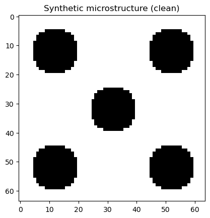
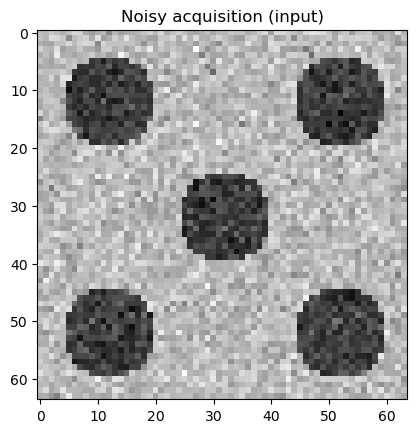
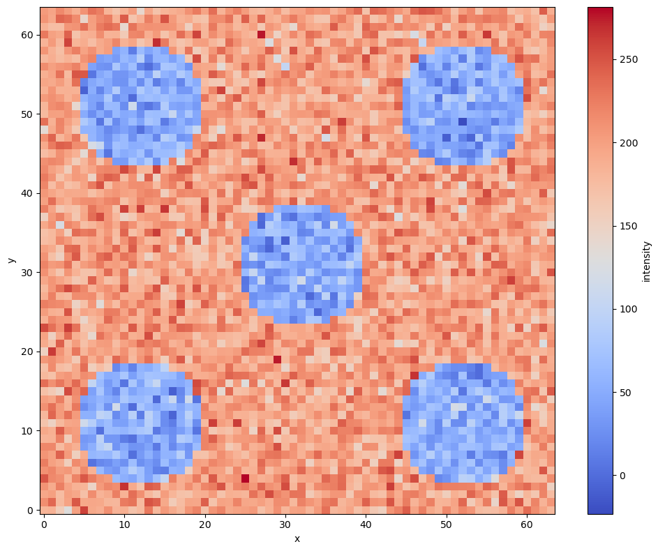
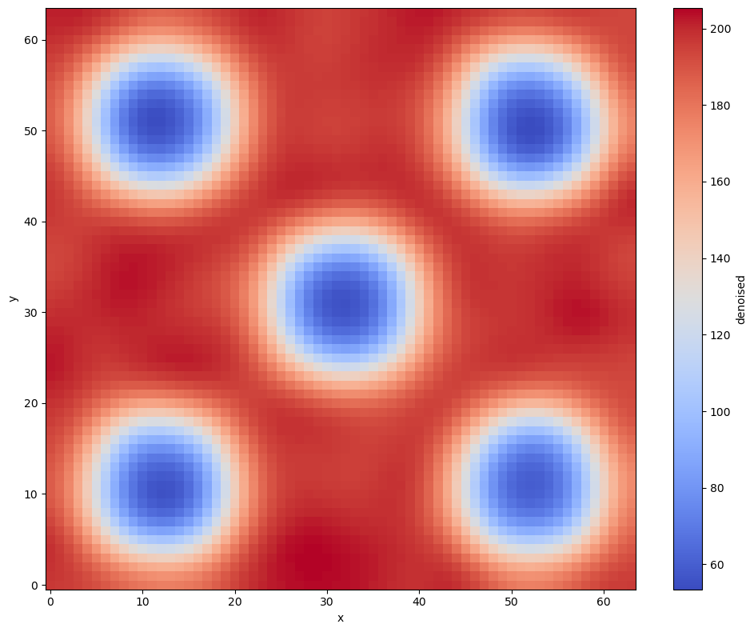
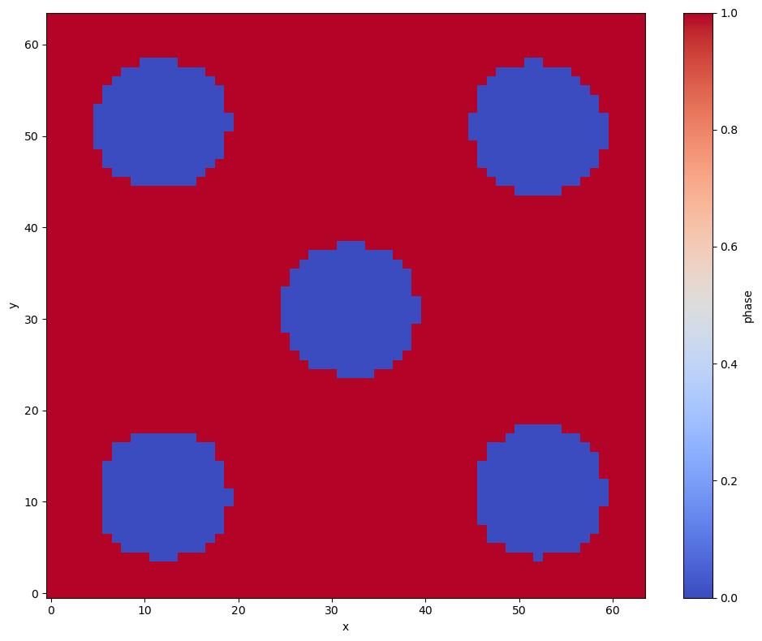
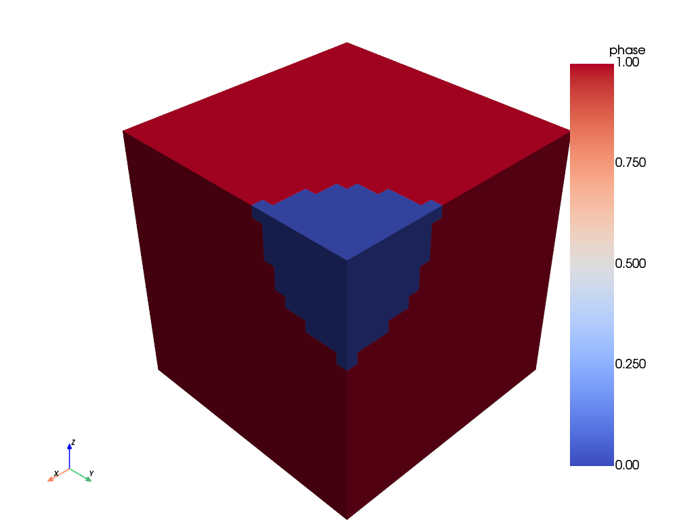
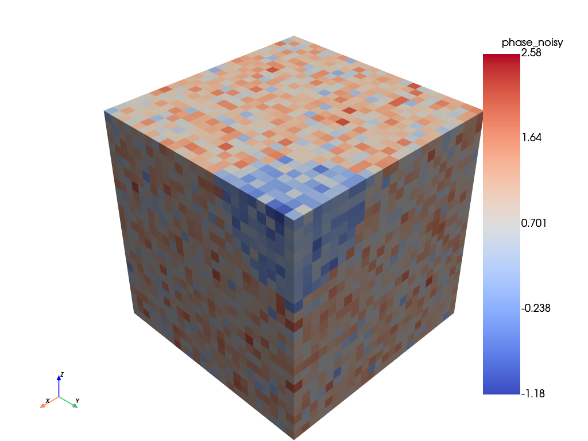
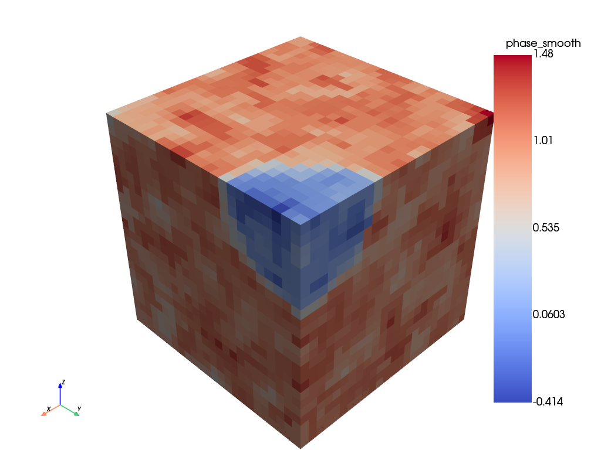
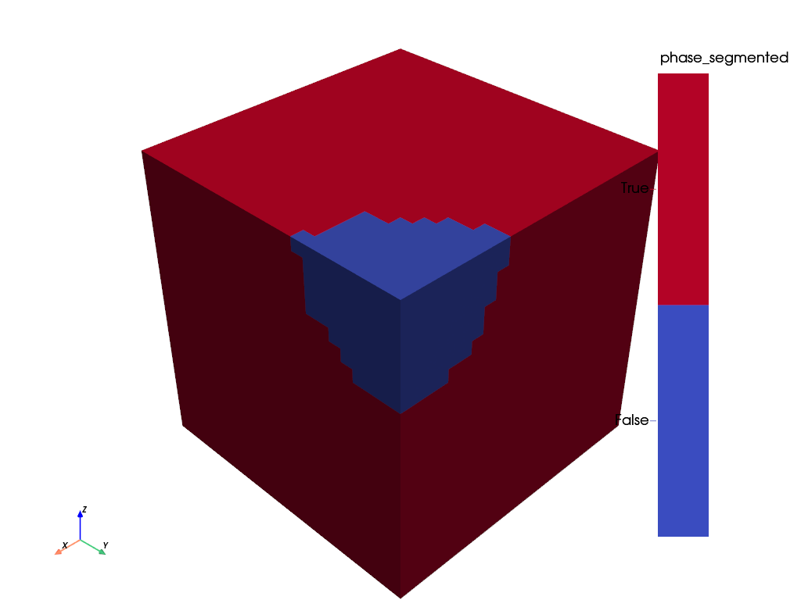

Applying functions to a Material with Material.apply#
import numpy as np
import matplotlib.pyplot as plt
from scipy.ndimage import gaussian_filter, median_filter
from materialite import Material, Sphere
rng = np.random.default_rng(seed=0)
Material.apply lets you run any function (callable) directly on a named field. It handles field extraction, array reshaping, and result storage automatically. This makes it straightforward to combine Materialite with external libraries such as scipy.ndimage and scikit-image without writing reshape or bookkeeping code.
This demo covers two scenarios:
Loading a 2D grayscale microstructure image and filtering it.
Filtering a 3D synthetic microstructure created from a geometry.
Both use identical apply calls; the reshaping is handled automatically based on the function’s library and the material’s dimensions.
Part 1: 2D image processing#
Create a 64x64 synthetic two-phase microstructure: circular particles (intensity 50) in a matrix (intensity 200).
image = np.full((64, 64), 200.0)
# Create circular features in the image
rows, cols = np.meshgrid(np.arange(64), np.arange(64), indexing="ij")
for cy, cx in [(12, 12), (12, 52), (32, 32), (52, 12), (52, 52)]:
image[(rows - cy) ** 2 + (cols - cx) ** 2 < 8**2] = 50.0
plt.imshow(image, cmap="gray", origin="upper")
plt.title("Synthetic microstructure (clean)")
Text(0.5, 1.0, 'Synthetic microstructure (clean)')

Add Gaussian noise to simulate a real acquisition.
noisy_image = image + rng.normal(scale=25.0, size=image.shape)
plt.imshow(noisy_image, cmap="gray", origin="upper")
plt.title("Noisy acquisition (input)")
Text(0.5, 1.0, 'Noisy acquisition (input)')

Load the noisy image as a Material using from_image. The default convention='image' matches the NumPy/PIL row-column layout (row 0 at the top). The image axes map to x and y; a singleton z axis is added.
material = Material.from_image(noisy_image, label="intensity")
print(f"dimensions: {material.dimensions}")
print(f"spacing: {material.spacing}")
dimensions: [64 64 1]
spacing: [1. 1. 1.]
material.plot("intensity")

(<Figure size 1000x800 with 2 Axes>, <Axes: xlabel='x', ylabel='y'>)
Applying functions to fields
gaussian_filter from scipy.ndimage smooths an N-dimensional array. A typical call looks like:
smoothed = gaussian_filter(input_array, sigma=3)
To use it on a material field without apply, you would need to extract the field, reshape it, call the function, and store the result:
flat = material.extract('intensity')
volume = flat.reshape(material.dimensions) # (64, 64, 1)
smoothed = gaussian_filter(volume, sigma=3)
material = material.create_fields({'denoised': smoothed.ravel()})
Material.apply handles all of this in one call. The field label 'intensity' is the positional argument to apply; it is extracted and reshaped before being passed to the function. sigma=3 is a keyword argument for gaussian_filter and is passed through unchanged. Because the function is from scipy.ndimage, apply detects this and reshapes the field to the material’s 3D grid before calling it.
Calling apply without the return_ argument returns the raw result from the function without storing it on the material.
smoothed_array = material.apply(gaussian_filter, "intensity", sigma=3)
print(f"type: {type(smoothed_array)}")
print(f"shape: {smoothed_array.shape} (matches material.dimensions)")
type: <class 'numpy.ndarray'>
shape: (64, 64, 1) (matches material.dimensions)
Pass return_= to store the result as a new field on the material.
material = material.apply(gaussian_filter, "intensity", sigma=3, return_="denoised")
material.plot("denoised")

(<Figure size 1000x800 with 2 Axes>, <Axes: xlabel='x', ylabel='y'>)
Segmenting the phases
Any callable works with apply, including lambda functions. A threshold at 125 separates particles (0) from the matrix (1). The lambda function receives a flat 1D array from material because it is not from an external library, so no automatic reshaping is applied.
threshold = lambda arr: arr > 125
material = material.apply(threshold, "denoised", return_="phase")
material.plot("phase")

(<Figure size 1000x800 with 2 Axes>, <Axes: xlabel='x', ylabel='y'>)
Volume fractions
Calling apply without return_ is useful for computing summary statistics. np.mean on the phase field gives the matrix volume fraction directly.
matrix_fraction = material.apply(np.mean, "phase")
print(f"Matrix fraction: {matrix_fraction:.2%}")
print(f"Particle fraction: {1 - matrix_fraction:.2%}")
Matrix fraction: 79.88%
Particle fraction: 20.12%
Part 2: 3D volumetric filtering#
The same apply pattern works for materials with three full dimensions. A 24x24x24 material with a spherical inclusion is constructed, contaminated with noise, and then filtered. When apply detects a scipy.ndimage function on a material with dimensions [24, 24, 24], it automatically reshapes the flat field to a (24, 24, 24) array before calling the function.
material_3d = Material(dimensions=[24, 24, 24]).create_uniform_field("phase", 1.0)
material_3d = material_3d.insert_feature(
Sphere(radius=8.0, centroid=material_3d.max_corner), fields={"phase": 0.0}
)
material_3d.plot("phase")

Add noise using apply and a simple lambda function.
add_noise = lambda arr: arr + rng.normal(scale=0.4, size=len(arr))
material_3d = material_3d.apply(add_noise, "phase", return_="phase_noisy")
material_3d.plot("phase_noisy")

A 3D median filter removes the noise while preserving the sharp boundary between the inclusion and the matrix. apply automatically reshapes the flat field to (24, 24, 24) before calling median_filter, then flattens the result back.
material_3d = material_3d.apply(
median_filter, "phase_noisy", size=3, return_="phase_smooth"
)
material_3d.plot("phase_smooth")

Threshold back to a binary field with the same lambda pattern used in Part 1.
threshold_3d = lambda arr: arr > 0.5
material_3d = material_3d.apply(threshold_3d, "phase_smooth", return_="phase_segmented")
material_3d.plot("phase_segmented")

The same apply(np.mean, ...) call from Part 1 gives volume fractions for the 3D case without any changes.
inclusion_fraction = 1 - material_3d.apply(np.mean, "phase_segmented")
print(f"Matrix fraction: {1 - inclusion_fraction:.2%}")
print(f"Inclusion fraction: {inclusion_fraction:.2%}")
Matrix fraction: 97.58%
Inclusion fraction: 2.42%